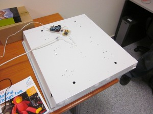
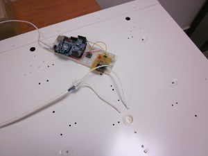
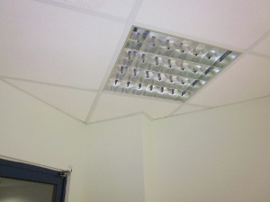
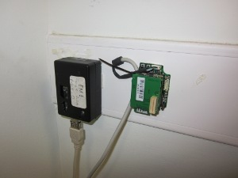
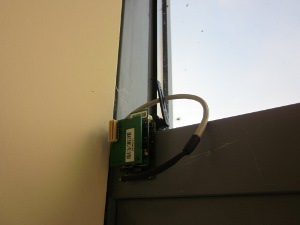
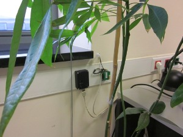
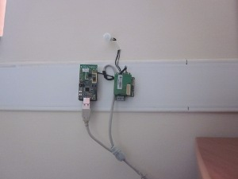
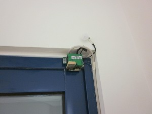
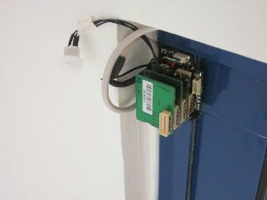

Testbeds
Computer Technology Institute & Press (CTI)
Overview
The local WISEBED testbed at the Computer Technology Institute & Press "Diophantus" (CTI) is located
in the office room at the CTI ( Maritsa's building 0. floor). The
testbed consists of 154 nodes of two different kinds (iSense and TelosB ) in 8 rooms.
The CTI testbed consists of the following sensor nodes:
- iSense by coalesenses
- Jennic 32 bit microprocessor (JN5139R1)
- 802.15.4 radio interface
- Fixed Power Supply via USB Interface
- Half of the nodes are equipped with temperature and light sensors
- the other half with a PIR and an accelerometer
- TelosB byCrossbow (now willow)
- Texas Instruments 16 bit microprocessor (TI MSP 430)
- 802.15.4 radio interface
- Fixed Power Supply via the USB Interface
- Temperature, humidity and light sensor
- 1 MB external flash

An Arduino that is Controlling the a lamp in the kitchen. This Arduino can be controlled using the Testbed
Nodesto switch lights on and off automatically when someone enters the room.

Closest look of the arduino.

The lamp the Arduino is connected to, and the iSense that controlls it (lower left corner).

An iSense and a TelosB node placed on the wall. The iSense is using an Environmental. The TelosB is inside a
plastic Case.

iSense Node with External Antenna placed on a Window equiped with an Environmental Module. The iSense is
placed on the Window to increase communication Range.

An iSense and a TelosB node placed on the wall. The iSense is using an Environmental and a Security Module.

An iSense and a TelosB node placed on the wall. The iSense is using an Environmental and a Security Module.

iSense node Placed on a Window with a Security and an Environmental Module.

Detail view of the window node.
Client Configuration
WiseGui Web Frontend
You can directly interact with our testbed using the WiseGui-based Web
frontend:
http://wisebed.itm.uni-luebeck.de/.
SOAP API v2.3 Web Service Endpoints
If you are using our SOAP API (e.g. by using the older
Experimentation Scripts scripting client or writing a custom client) you'll
need the endpoint URLs listed below: